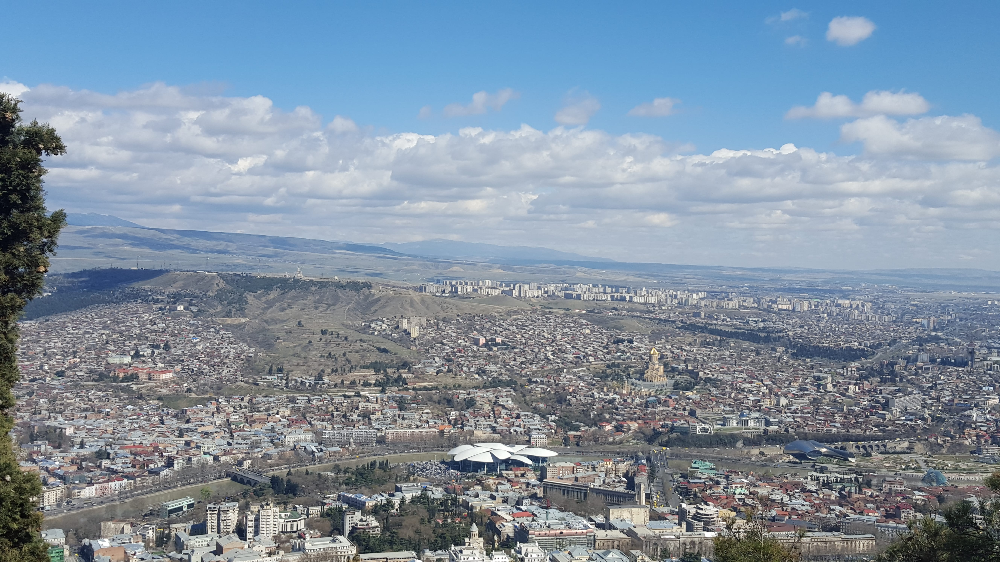
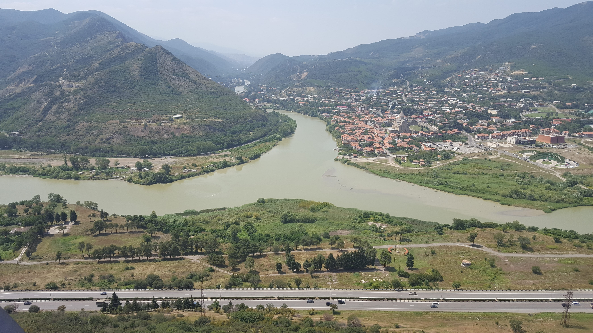

The Georgian heartland, center of East Georgian culture, and the national economic, cultural, and political hub; home to many major destinations like Tbilisi, Mtskheta, Gori and Kazbegi and the mighty Mount Kazbeg
Tbilisi is the most cosmopolitan and diverse of Georgia's cities, it is not just the nation's capital but also a hub that contains nearly a third of all Georgia's population. It is an interesting mix of old classical and ultra modern buildings.
Mtskheta is the historic former capital of Eastern Georgia, the centre of the Georgian Orthodox Church, and a UNESCO World Heritage site.